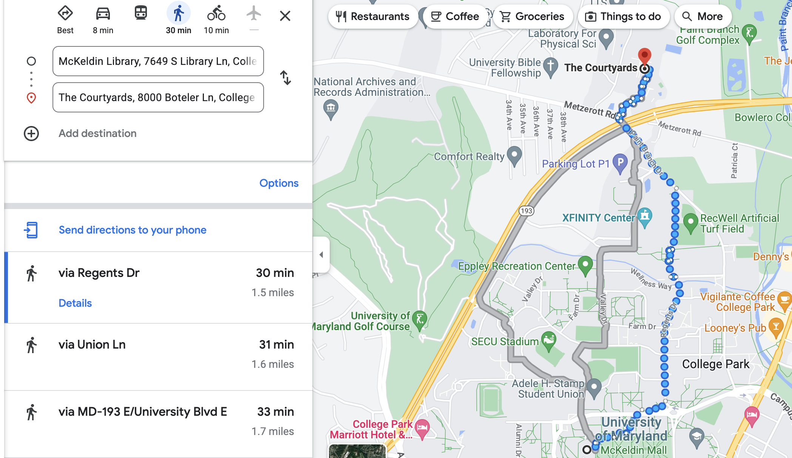

The University of Maryland north campus dorms at night. Every year rising seniors are almost forced to leave these and the south campus dorms to seek housing elsewhere with their priority for housing changed to the lowest. Image courtesy of Wikimedia Commons.
Every year at the University of Maryland, rising seniors are forced to weigh various options as the university almost forces them out of the dorms with their low priority.
Many look at the various apartments on and off campus, while some look at nearby houses. Others even decide to leave the area as a whole, taking up residence far out of the reach of the campus, choosing to commute to school.
All are plausible options for seniors as long as they fit the individual constraints of each person. This story will sort out some of the pros and cons of some of the most highly regarded options among seniors in effort to help bring clarity to what might be best for you, the reader.
The first option that many on this campus choose the route of, is South Campus Commons. Commons prices can depend on the type of room that you get, but the majority of rooms, being four bedrooms and two bathrooms, are around the same price of just over $1000 monthly for each person.
In order to get commons, you have to apply as a rising junior, when you are most likely to get the room since your priority is the highest. If you get the room, then you may renew the lease the following year as a senior, making it a very convenient option for many.
Although it is a great location and cost efficient, as it is comparable to dorms and cheaper than most off-campus options, there are those who get unlucky with their appointment times for the process (which are randomly generated within your priority group) and don’t get the opportunity to get a room before they’re all taken. So with that said, here are some alternatives.
Rising senior Daniela Nemi had this exact problem at the end of her sophomore year, as she struggled to find housing after the Commons filled up before her appointment time. Nemi, who hadn’t filled out a housing application, was forced to look to options outside of campus.
This would lead her to another possibility: Terrapin Row, known as T-Row by many students, and now Nemi’s home for the whole school year.
“I was going to be homeless, so I had to get off campus housing and T-Row made the most sense for me,” said Nemi.
Nemi is a big fan of the 24/7 access to the gym and the various modern commodities provided in her room, stating those as the best qualities about living there.

The nighttime view from outside the three different T-Row buildings at the main entrance. There are many stores lining the bottom of the building providing students with places to eat. Image taken by me.
However, the drawback of T-Row is that it is much more expensive than certain alternatives, as Nemi’s rent for her four bedroom two bathroom amounts to $1,285 without bills. Still, this is a good deal compared to some residents, according to Nemi.
One alternative to this is the UMD Courtyards, which offer housing similar to the South Campus Commons but are located across University Boulevard on North Campus, and are cheaper than Commons.
For the same four bedroom two bathroom apartment, people pay $850 monthly at Courtyards with similar commodities provided around the apartment. The biggest drawback is the commute, which is hard to make without some vehicle, bike, or scooter. To put it in perspective, the walk to McKeldin library would take just over 30 minutes, according to google maps (see image below).
The directions from Courtyards to McKeldin Library in the center of campus. Google Maps estimates a 30 minute walk, which is quite the trek for any residents who have no other mode of transportation. Image courtesy of Google Maps.
For rising senior Luke Litrenta, this commute is worth the time, as the tranquility of the area along with the cheaper price both factor into his decision to move into Courtyards.
“The location was far enough away from everything where it's pretty quiet,” said Litrenta. “[It's] a little bit more isolation, maybe that’s just how I’m used to where I’m from.”
Litrenta also appreciated Courtyards still being university affiliated despite its location off campus, making it so he doesn’t have to worry about paying extra bills and having to buy furniture since they all come with the apartment.
Another option for seniors — the one that gives them the most independence — is moving into a house.
For rising seniors Kaiden Skinner and Raed Ahmed, this was the best option as it accommodated their group of five while also meeting their price expectations. The house they settled on lies in the Berwyn Heights community, not all too far from Courtyards.
Each of the two are paying $875 dollars, but this price is higher for two of their roommates who have taken the master bedroom and second largest bedroom, being priced at $1025 and $925 monthly respectively.
However, the prices for different housescan range all over the place, as Skinner mentioned. According to him, it is possible for people to get houses for monthly prices up to a couple hundred dollars cheaper than theirs with similar accommodations to their own if they search diligently and early.
Both the roommates love the idea of the autonomy they will be getting. With both owning cars, the commute is one that should remain easy.
“I like the independence of cooking on my own and having my own lavatory spaces, in addition to an overall cheaper lifestyle,” Ahmed said. “Many of the other housing options, especially on campus… have rich values upwards of $1100 - $1400, near double my rent.”
Skinner also mentioned that they considered townhouses even farther from campus in Greenbelt Station where the prices were even cheaper for more luxurious apartments, but ultimately decided to go with the house closer to campus due to most of the group's preferences.
“If you’re open to commuting and you find an option that fits your budget and you like that option as a whole, why not take it?” said Skinner.
Many people take different routes than those mentioned here, but I hope this can be found as a helpful insight to the options for any of your own upcoming decisions if you are a student at the University of Maryland.
© 2023 JOUR352 Final Project


{kind=link}